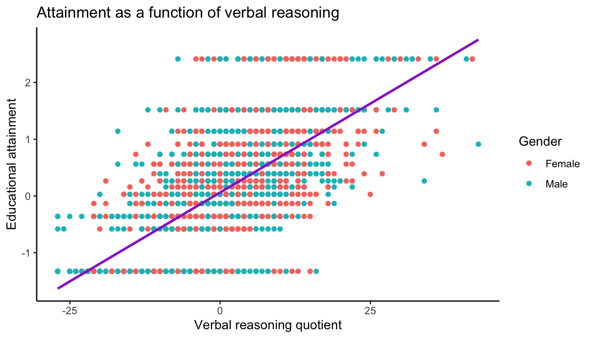

library(haven)
dat <- read_dta("data/neighborhood.dta")2 Intro to R Markdown
2.1 Overview
R Markdown (and its newer cousin Quarto) is a simple but powerful markdown language which you can use to create documents with inline R code and results. This makes it much easier for you to complete homework assignments and reports; makes it much less likely that your work will include errors; and makes your work much easier to reproduce. For example, if you find you have to drop cases from your dataset, you can simply add that line of code to your document, and recompile your document. Any text that’s drawn directly from your analyses will be automatically updated.
Other R packages, such as Sweave and knitr, allow you to do the same things, but R Markdown has the added advantage of being relatively simple to use. This document will show you how to use R Markdown to create documents which draw directly on your data to produce reports.
2.2 Getting started
Every R Markdown document starts with a header. Headers look like this:
---
title: "My perfect homework"
author: "R master"
output: pdf_document
---A header can contain more or less information, as you see fit. Your computer needs to have a copy of LaTex installed in order to output .pdf documents. If you don’t, you should change output: pdf_document to output: html_document or output: word_document.
You identify sections of the document using hashtags; more hashtags indicate less important sections.
For example, this:
# A big sectionproduces a big header (large font, etc.)
while this
## A small sectionproduces a smaller header (still a large font, but less large).
Also, if your document includes a table of contents, the sections get used to automatically generate the table of contents.
You can italicize words by writing *italicize* or _italicize_. You can bold words with **bold** or __bold__.
You can add superscripts (E=mc2) by writing E=mc^2^.
You can create unordered lists:
- Item 1
- Item 2
- Item 3to get
- Item 1
- Item 2
- Item 3
Or ordered lists:
1. Item 1
2. Item 2
3. Item 3to get
- Item 1
- Item 2
- Item 3
To start a new page, just type \newpage (not relevant for HTML output).
As you may have noticed, one of the driving ideas behind R Markdown is that the text should be interpretable even if it’s not compiled. A person should be able to read this text file and understand the basic organization and what all of the symbols denote.
You can also add links and images, and do many other things beyond what we’ll show you in this class. There are many resources out there, but here’s one place you can start.
Instead of writing markdown using this, we note that newer versions of Markdown and Quarto have a visual editor that allows you to format things in the usual way, e.g., control-B for bold. Some people prefer to take that approach.
Regardless, to compile or knit the document, click on the button that says Knit or Render, or Shift + Ctrl/Cmd + K.
2.3 Embedding R code
There are two main ways to embed R code in R Markdown, code chunks or inline.
2.3.1 Code chunks
To insert a code chunk click on Insert on the top right corner of your R Markdown file and select R. Or use keyboard shortcuts: Ctrl + Alt + I for PC and Cmd + Option + I for Mac:
Code chunks have a number of different options. The most important ones for us are:
eval = TRUE, which means every time you knit the file, the code inside the R code chunk will get evaluated. This is the default.echo = TRUE, which means every time you knit the file, the code inside the R code chunk witll be rendered, and you can see both the code itself and the results from evaluating the code.
For class, you should keep echo = TRUE, so that we can see your code and be able to tell what went wrong, if something did. You can set echo = FALSE for code chunks that load and manipulate data.
Other code chunks options you may see in class are:
warning = FALSE, which means warning messages generated by the code will not be displayed.results = 'asis', which means results will not be reformatted when the file is compiled (useful if results return raw HTLM).fig.heightandfig.width, which specify the height and width (in inches) of plots created by the chunk.
Let’s try loading some data:
You can see the code is displayed, and the command is carried out. The file dat is loaded in the R environment.
Instead of specifying code chunks options every time, you can specify them globally in the setup chunk by using knitr::opts_chunk$set(echo = TRUE, eval = TRUE). You can then add additional options only to relevant chunks. If you want to exclude specific chunks, you can re-set echo = FALSE and eval = FALSE for those specific chunks.
Running code chunks: A good practice is to run individual code chunks to make sure they are doing what you want them to do. You can do this by executing individual lines of code, or whole chunks. Go to Run in the upper right corner and select what chunks to execute, e.g. Run Current Chunk, Run Next Chunk, etc.
2.3.2 Inline code
Code results can also be inserted directly in the text of your R Markdown file. This is particularly useful when you are extracting and interpreting model parameters. You can extract the coefficient from the model and use inline code to report it. If the data or model change, the text will change too when you knit the document.
To add inline code, enclose it in `r `. For example, to report the mean reading score, you can use
`r mean(dat$p7read)`Which will produce -0.0443549. That’s a few too many decimals, let’s round it off, using
`r round(mean(dat$p7read),2)`which produces “-0.04.”
Here we used two commands: round and mean. You can use more commands and write more complex inline code, depending on what you want to report.
2.4 Embedding plots
Plots are easy to embed. For example,
library(ggplot2)
dat$male <- factor(dat$male, levels = c(0, 1), labels = c("Female", "Male"))
ggplot(data=dat, aes(p7vrq, attain, colour=male)) +
geom_point() +
labs(title="Attainment as a function of verbal reasoning",
x = "Verbal reasoning quotient",
y = "Educational attainment", colour="Gender") +
geom_smooth(method="lm", formula = y ~ x, se=FALSE, colour="darkorchid3")
Girls are rendered as coral, boys are rendered in turquoise, and the line of best fit is drawn in darkorchid3 (because why not). Just because you have a lot of colors and plotting characters to work with doesn’t mean you need to use them all. In the options, I specified fig.width = 7 and fig.height = 7. Notice that this command draws on dat, which we loaded in a previous chunk. When knitting the document, code chunks get executed in order and the results persist throughout the R Markdown document.
For the purposes of class, we want to see both your plot code and the plot itself. It’s not uncommon to use wrong code to create a plot that looks correct (at least visually).
2.5 Embedding tables
You can directly render tables in R Markdown. The idea is, inside an R chunk, you call a command that prints out a table. The report then takes this printout and integrates it into your overall report. There are many different packages to make tables, but in class we’ll mostly use knitr, texreg, stargazer, and the tab_model() function in sjPlot.
You can use these packages to create a descriptive table. For example:
head( dat ) %>%
knitr::kable( digits = 2 )| neighid | schid | attain | p7vrq | p7read | dadocc | dadunemp | daded | momed | male | deprive |
|---|---|---|---|---|---|---|---|---|---|---|
| 675 | 0 | 0.74 | 21.97 | 12.13 | 2.32 | 0 | 0 | 0 | Male | -0.18 |
| 647 | 0 | 0.26 | -7.03 | -12.87 | 16.20 | 0 | 0 | 1 | Female | 0.21 |
| 650 | 0 | -1.33 | -11.03 | -31.87 | -23.45 | 1 | 0 | 0 | Male | 0.53 |
| 650 | 0 | 0.74 | 3.97 | 3.13 | 2.32 | 0 | 0 | 0 | Male | 0.53 |
| 648 | 0 | -0.13 | -2.03 | 0.13 | -3.45 | 0 | 0 | 0 | Female | 0.19 |
| 648 | 0 | 0.56 | -5.03 | -0.87 | -3.45 | 0 | 0 | 0 | Female | 0.19 |
See Chapter 6 for more on making various tables.
We can also use texreg or stargazer to create a taxonomy of regression models. We recommend texreg, which automatically outputs the variances of random effects (more on this soon).
For example:
library(texreg)
# fit some models
m1 <- lm(attain ~ male, data=dat)
m2 <- lm(attain ~ male + momed, data=dat)
m3 <- lm(attain ~ male + momed + daded, data=dat)
screenreg(list(m1,m2,m3),
custom.coef.names=c("Intercept", "Male",
"Maternal education", "Paternal education"))
=========================================================
Model 1 Model 2 Model 3
---------------------------------------------------------
Intercept 0.15 *** 0.03 -0.02
(0.03) (0.03) (0.03)
Male -0.12 ** -0.12 ** -0.12 **
(0.04) (0.04) (0.04)
Maternal education 0.49 *** 0.24 ***
(0.05) (0.05)
Paternal education 0.54 ***
(0.06)
---------------------------------------------------------
R^2 0.00 0.05 0.09
Adj. R^2 0.00 0.05 0.08
Num. obs. 2310 2310 2310
=========================================================
*** p < 0.001; ** p < 0.01; * p < 0.05Both packages include a lot of options and make it easy to produce publication-quality tables with little effort. See later chapters of this book (Chapter 7, in particular) for more detail.
2.6 Embedding math
We’ll be writing a lot of mathematical models in class. R Markdown can use LaTeX style math-writing to display mathematical script. Another chapter in the book has more resources with LaTeXsyntax for the mostly commonly used models in the class. Similar to code chunks and inline code, you can use LaTeX for single or multiple equations, or for individual parameters embedded in the text.
For example, the following statement
$$Y_i = \beta_0 + \beta_1 X_i + \epsilon_i$$compiles to
\[Y_i = \beta_0 + \beta_1 Y_i + \epsilon_i\]
And the following statement $\mu$ compiles to \(\mu\). This will be very helpful when we ask you to match R output to model parameters in homework.
2.7 Help! R Markdown report generation doesn’t work
Don’t put “View()” in your Markdown file when loading your csv file. Just put in the read_csv line. Otherwise you will not be able to knit.
Also watch for the skim() command–it can crash report generation as well.
If you can’t knit PDFs you need to install latex (tex). Once you do, reboot your computer. If things don’t work, then knit to Microsoft word (or, failing that, html as a last resort), print to pdf, and turn that in. But then ask a teaching fellow to help get things set up, since PDFs make for much more readable reports.